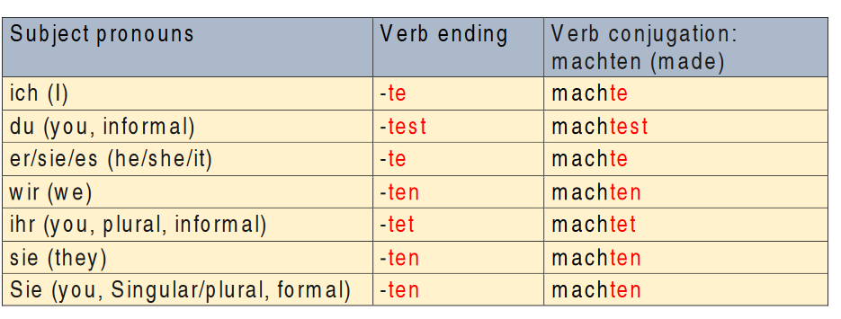
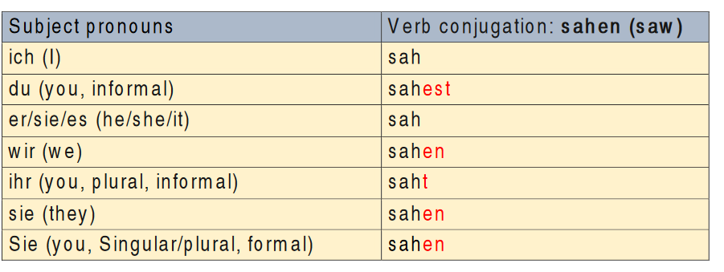
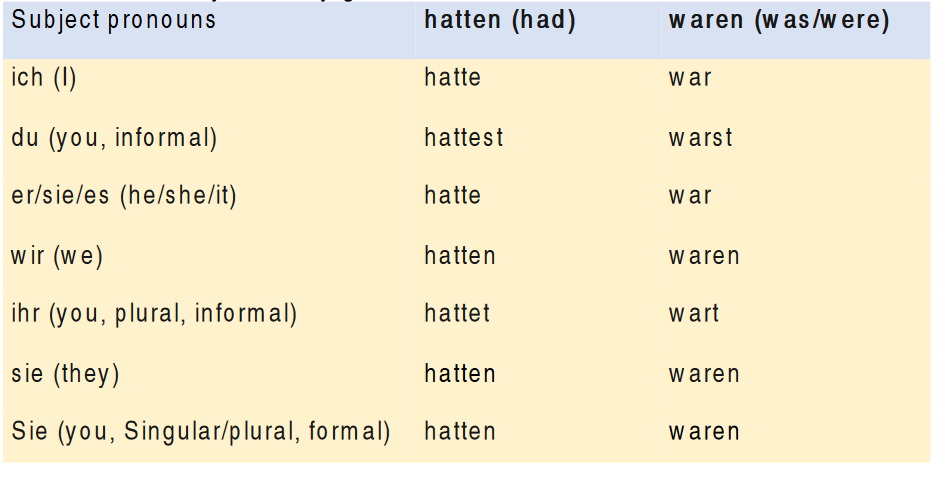
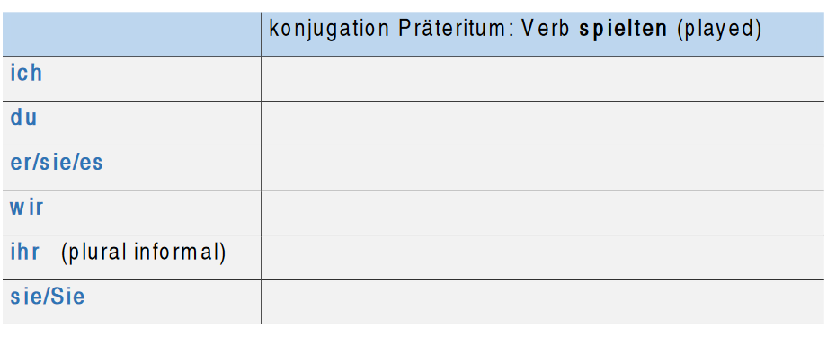

The Past tense - Imperfekt / Präteritum
‘Präteritum’ refers to the events that happened in the past as the perfect tense but it is used mostly in written language such as stories, novel, newspapers, etc.
Beispiel:
Ich machte die Hausaufgabe (I did the homwork)
Ich fuhr nach Berlin (I travelled to Berlin)
How to conjugate verbs in ‘Präteritum’?
For regular/weak verbs, drop the verb the ending ‘-en’ and add the verb endings of ‘Präteritum’ as follows:

For irregular verbs the vowel changes in the verb stem as follows:

‘haben’ and ‘sein’ are the most commonly used irregular verbs in ‘Präteritum’. They are conjugated as follows:

Übung (exercise):
Ergänzen das Verb in der richtigen Form.
(Complete the verb in the correct form.)
